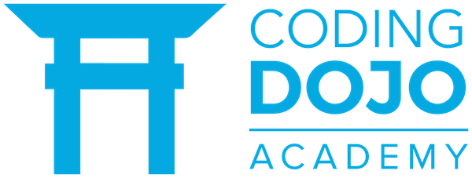
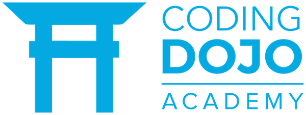

Me complace presentarte mi portafolio como desarrolladora front-end,soy una apasionada creadora de experiencias digitales cautivadoras y funcionales. Actualmente, me encuentro en las primeras etapas de mi carrera profesional y estoy comprometida con mi crecimiento y desarrollo en el mundo del desarrollo web. Mi enfoque principal se centra en la creación de interfaces de usuario atractivas y accesibles, utilizando tecnologías como HTML, CSS y JavaScript para dar vida a diseños creativos y amigables con el usuario. A través de mis proyectos, he demostrado mis habilidades y mi compromiso con la entrega de soluciones de alta calidad. Mi aspiración a corto plazo es ampliar mis habilidades para convertirme en una desarrolladora full-stack. Estoy inmersa en el aprendizaje continuo de tecnologías back-end y estoy emocionada por la perspectiva de fusionar mi experiencia front-end con un sólido conocimiento del desarrollo del lado del servidor. Adjunto encontrarás ejemplos de mi trabajo, así como información adicional sobre mi formación académica y habilidades técnicas. Estoy abierta a oportunidades de colaboración y aprendizaje que me permitan crecer profesionalmente y contribuir al éxito de proyectos innovadores. Aprecio sinceramente tu tiempo y consideración al revisar mi portafolio. Estoy emocionada por la posibilidad de hablar contigo sobre cómo mi pasión por el desarrollo web puede contribuir a los objetivos de tu equipo o empresa.
 
